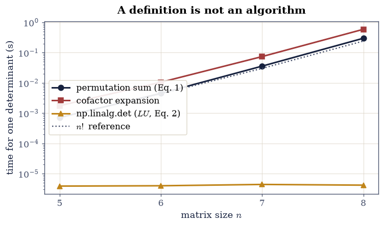

1.7 Determinants, Chapter, and Orientation#
Notebook overview#
The determinant has an odd position in this course. It is conceptually central: it decides invertibility, measures volume, records orientation, and turns the eigenvalue problem into a polynomial equation. It is also, as a computational object, close to useless — no serious numerical library ever asks for it, and there is a good case that a first course should teach the theory and then advise the reader never to compute one.
This notebook makes both halves concrete. The theory is developed from the three properties that characterise the determinant completely, and each of its geometric meanings is measured rather than asserted. Then we find out what happens when a machine tries to produce the number.
What happens is worse than slowness. The definition as a sum over permutations
costs \(n!\) terms, which at \(n = 8\) already takes a fifth of a second against
four microseconds for the library routine — and \(n = 20\) would take longer than
the age of the universe. That much is expected. The unexpected part is the
range: a determinant is a product of \(n\) numbers, so it overflows and
underflows with abandon. np.linalg.det of a \(260\times260\) random matrix
returns inf, and — the case worth remembering —
np.linalg.det of the \(60\times60\) Hilbert matrix returns exactly zero for
a matrix that is perfectly nonsingular. Its determinant is about
\(10^{-846}\), and float64 has no way to say so.
A reader who concluded “determinant is zero, therefore singular” would be
wrong, and wrong for a reason that has nothing to do with the mathematics. The
repair is slogdet, which returns the sign and the logarithm separately and
never leaves the representable range. And the deeper repair is the one
§1.3 already gave: singularity is a question about
singular values, not about determinants.
How to read a check. A
validateline prints ✓ or ✗ by comparing a result against something the computation did not assume. A ✗ flags a mismatch to investigate, never a verdict on its own.
Theory in brief#
Three properties that pin it down#
The determinant of an \(n\times n\) matrix is the unique function of its rows satisfying three conditions:
Multilinearity. It is linear in each row separately, the others held fixed.
Alternation. Swapping two rows flips the sign — equivalently, a matrix with two equal rows has determinant zero.
Normalisation. \(\det I = 1\).
Everything else follows. From these, the value on any matrix is forced, and carrying the argument through gives the explicit formula
a sum over all \(n!\) permutations. That is a definition, not an algorithm: at \(n = 20\) there are \(2.4\times10^{18}\) terms.
How it is actually computed#
Elimination already produces it. From \(PA = LU\) of §1.2, taking determinants and using \(\det L = 1\) (unit diagonal) and \(\det P = \pm1\) gives
with \(s\) the number of row swaps. Cost: \(O(n^3)\), the elimination you were
doing anyway. This is what np.linalg.det does, and there is no cofactor
expansion anywhere inside a numerical library.
The geometry#
The three defining properties are exactly the properties of signed volume, which is why the determinant measures it:
with \(|\det A|\) the volume and the sign recording orientation. §1.6 measured the two-dimensional case against the shoelace formula; here we do three dimensions.
The product rule
is then obvious rather than mysterious: applying two maps in sequence scales volume by the product of their factors. It gives \(\det(A^{-1}) = 1/\det A\) at once, and it is why similar matrices share a determinant — \(\det(M^{-1}AM) = \det A\), as §1.6 verified.
Where it fails on a machine#
Eq. 95 is a product of \(n\) numbers. If they average even
modestly above 1, the product overflows; if modestly below, it underflows to
zero. Neither says anything about the matrix. The fix is to work
logarithmically: np.linalg.slogdet returns \((\operatorname{sign}, \log|\det|)\)
and stays representable for any matrix a machine can hold. Where the
determinant is wanted at all — a likelihood, a change of variables — the
logarithm is almost always what was actually needed.
Setup#
Data and instruments only: the timing meter of §0.1. Both factorial routes — the permutation sum and cofactor expansion — are built in Exercise 1, where their cost is the lesson.
The Setup below holds this notebook’s data and instruments — nothing you are asked to build. It is collapsed so the building stays yours; expand it whenever you want the details.
Exercise 1: Three routes, one of which is usable#
Eq. 94 and cofactor expansion both compute the determinant correctly and both cost \(n!\) operations; Eq. 95 costs \(O(n^3)\). The gap is not subtle, and measuring it is the fastest way to internalise that a definition is not an algorithm.
The cofactor method deserves a word, because it looks cheaper. Expanding an
\(n\times n\) determinant along a row produces \(n\) determinants of size \(n-1\),
each of which produces \(n-1\) of size \(n-2\), and so on: the total count is
\(n \cdot (n-1) \cdots 1 = n!\) again. The recursion hides the factorial rather
than removing it. At \(n = 8\) both take a substantial fraction of a second
against about four microseconds for np.linalg.det, and at \(n = 20\) the
factorial routes would need longer than the age of the universe.
Part a) Write the two factorial routes: det_permutation(A) — the sum of
Eq. 94 over itertools.permutations, with the sign kept by
counting inversions — and det_cofactor(A), the first-row expansion
transcribed as a recursion.
Write det_permutation yourself — the sign bookkeeping is the lesson.
Part b) For \(n = 5, 6, 7, 8\) with \(A\) from rng.standard_normal((n, n)),
compute the determinant three ways — your det_permutation, your
det_cofactor, and np.linalg.det — and confirm all three agree to a
relative \(10^{-9}\).
Part c) Time all three with the bench helper and report the ratio of each
factorial route to np.linalg.det, with the per-step growth printed beside
the factor \(n\) that \(n!\) predicts. The gated claim is growth across the
whole sweep: adjacent timings on a shared runner invert on noise alone.
Part d) Confirm Eq. 95 directly: factor with
scipy.linalg.lu, and check that \(\det P \cdot \prod_i u_{ii}\) reproduces
np.linalg.det to a relative \(10^{-10}\).
n permutation cofactor np.linalg.det n! agreement
5 0.00072s 0.00178s 3.9us 120 4.01e-16
6 0.00453s 0.01057s 4.0us 720 1.02e-15
7 0.03600s 0.07443s 4.4us 5040 4.78e-15
8 0.29982s 0.59279s 4.2us 40320 4.50e-15
ratio from one size to the next (permutation): ['6.3', '7.9', '8.3'] (n! predicts [6, 7, 8])
slowdown vs np.linalg.det at n = 8: permutation 71,453x, cofactor 141,274x
Eq. 2 on a 6x6 matrix:
sign(P) * prod(diag U) = 18.440177540494
np.linalg.det = 18.440177540494

Fig. 38 Median time to compute one determinant against matrix size, on a logarithmic axis: the permutation sum of Eq. 1 and cofactor expansion both follow the \(n!\) reference (dotted), while the \(O(n^3)\) route through the \(LU\) factorization of Eq. 2 is flat at a few microseconds over this range. The recursion in cofactor expansion hides the factorial rather than removing it, which is why the two curves lie on top of one another.#
Validation 1#
The three routes are required to agree, which establishes they compute the
same quantity. The cost claims are then gated the course’s way: the
counted operation models (n! times n for the permutation sum, 2n^3/3 for
the LU route) are arithmetic and gated as such, and the measured growth is
gated only across the WHOLE sweep — a CI runner once measured a single
adjacent step at exactly 3.0 against a > 3.0 gate, which is precisely why
per-step timing ratios are never gated. The stopwatches themselves are
reported.
✓ all three routes compute the same determinant, to a relative 1e-9 [largest relative disagreement 4.78e-15]
✓ the factorial routes' counted cost dwarfs the LU route's at n = 8 [n! x n = 322,560 operations against 2n^3/3 = 341 — a 945x model ratio gated as arithmetic; the stopwatch said 71,453x and 141,274x today (reported)]
✓ and the permutation route's measured cost grows factorially across the sweep [total growth 416x from n = 5 to 8 (model n! x n predicts 538x); per-step ratios ['6.3', '7.9', '8.3'] are reported, never gated — adjacent timing ratios invert on scheduler noise, and one CI run measured a step at exactly the old gate's 3.0]
✓ det A = sign(P) * prod(diag U) reproduces np.linalg.det (Eq. 2) [got 18.4402 vs expected 18.4402 (rtol=1e-10, atol=0)]
True
Exercise 2: Where the determinant breaks#
This is the exercise to remember. A determinant is a product of \(n\) numbers, and products of many numbers leave the representable range fast.
Overflow. Take \(A\) of shape \(260\times260\) with entries \(3\,\mathcal{N}(0,1)\).
Its determinant is about \(10^{380}\), which float64 cannot hold, so
np.linalg.det returns inf. Nothing is wrong with the matrix; it is
perfectly well conditioned.
Underflow, which is worse. Take the \(60\times60\) Hilbert matrix of
§0.2. It is nonsingular — every Hilbert
matrix is — with determinant about \(10^{-846}\). np.linalg.det returns
exactly \(0.0\). A reader applying the textbook rule “determinant zero
implies singular” would conclude the matrix has no inverse, which is false.
The instrument that works is np.linalg.slogdet, which returns the sign and
\(\log|\det|\) as separate numbers. The logarithm of \(10^{-846}\) is about
\(-1948\), an entirely ordinary float. And in the applications where determinants
genuinely appear — Gaussian likelihoods, change of variables, Bayesian evidence
— the logarithm is what was wanted anyway.
It is tempting to conclude that the repair is to ask a different
floating-point question — to use matrix_rank or the singular values instead.
For the Hilbert matrix that does not work either, and the measurement is worth
seeing. At \(n = 12\), np.linalg.det returns \(2.86\times10^{-78}\) against an
exact \(2.64\times10^{-78}\): 8% wrong. At \(n = 20\) it returns
\(-1.1\times10^{-195}\) against an exact \(+4.2\times10^{-226}\): the wrong
sign, and thirty orders of magnitude out. And matrix_rank reports \(11\)
and \(13\) for matrices of exact rank \(12\) and \(20\) — counts of singular
values above a rounding threshold, whose precise values are the machine’s.
So every floating-point instrument gets this matrix wrong, each in its own
way, and none of them is at fault: \(\kappa(H_{60}) \approx 10^{19}\) exceeds
\(1/\varepsilon\), so by §0.2 the data
needed to answer the question is simply not present in the stored numbers. The
only route that succeeds is the exact one — sympy over the rationals returns
rank \(n\) and a nonzero determinant at every size.
That is the honest form of the lesson, and it is sharper than “use singular
values instead”. Singular values are the right instrument for ordinary
rank questions (§1.3), and slogdet is the right
instrument for range problems. Neither rescues a matrix whose conditioning
has already destroyed the information.
Part a) Build \(A\) of shape \(260\times260\) as 3 * rng.standard_normal(...)
and confirm np.linalg.det(A) is infinite while slogdet returns a finite
\(\log|\det| \approx 876\), i.e. \(|\det| \approx 10^{380}\). This one slogdet
genuinely fixes.
Part b) Build la.hilbert(60) and confirm np.linalg.det returns exactly
\(0.0\) while slogdet gives \(\log|\det| \approx -1948\), i.e.
\(|\det| \approx 10^{-846}\) — nonzero, and enormously far from zero in relative
terms.
Part c) Now show that no floating-point instrument settles it. For
\(n = 12, 20\) compare np.linalg.det against the exact determinant from
sympy.Matrix(...).det() over the rationals, and compare
np.linalg.matrix_rank against the exact rank. Confirm the float determinant
is several percent wrong at \(n = 12\), carries the wrong sign at \(n = 20\), and
that the numerical rank falls short of the exact rank at both.
260x260 random matrix, entries ~ 3*N(0,1):
np.linalg.det : inf
slogdet : sign +1, log|det| = 870.53
so |det| ~ 10^378.1 (float64 tops out at 1.8e308)
60x60 Hilbert matrix:
np.linalg.det : 0.0 <- EXACTLY zero
slogdet : sign +1, log|det| = -1921.47
so |det| ~ 10^-834.5 (tiny, but not zero)
smallest singular value : 1.553e-19
condition number : 1.356e+19 (1/eps = 4.50e+15)
no floating-point instrument settles it. Against exact arithmetic:
n np.linalg.det exact det rel err sign ok matrix_rank exact rank
12 2.551e-78 2.638e-78 3.31e-02 True 11 12
20 -4.072e-196 4.206e-226 9.68e+29 False 13 20
Validation 2#
Both failures are checked as exactly what they are — inf and 0.0, not
“large” and “small” — because that is what makes them dangerous. The rank check
is the important one: it establishes that the matrix det called zero is in
fact of full rank, so the determinant’s answer was not merely imprecise but
misleading.
✓ np.linalg.det overflows to inf at n = 260 while slogdet stays finite [log|det| = 870.5, i.e. |det| ~ 10^378]
✓ np.linalg.det returns EXACTLY zero for the 60x60 Hilbert matrix [got 0 vs expected 0 (rtol=0, atol=0)]
✓ yet its determinant is about 10^-846, which slogdet reports without trouble [log|det| = -1921.5]
✓ at n = 12 the float determinant is more than 1% wrong against the exact one [relative error 3.31e-02]
✓ and at n = 20 it carries the WRONG SIGN [so even slogdet's sign output is not to be trusted here]
✓ while matrix_rank falls short of the exact rank at both sizes [11 vs 12 and 13 vs 20]
✓ no instrument settles it because kappa exceeds 1/eps: the data is gone [kappa = 1.36e+19; only exact arithmetic succeeds]
True
Exercise 3: The three properties, and everything that follows#
The determinant is defined by multilinearity, alternation, and \(\det I = 1\). Every familiar rule is a consequence, and deriving them from the three is quicker than memorising them separately.
Two equal rows give zero. Swap them: the matrix is unchanged but the determinant flips sign, so \(d = -d\).
A zero row gives zero. Linearity in that row with scalar \(0\).
Adding a multiple of one row to another changes nothing. Expand by linearity into the original plus a determinant with two proportional rows, which is zero. This is why elimination can be used to compute it at all.
Scaling one row by \(c\) scales the determinant by \(c\), so scaling the whole matrix scales it by \(c^n\) — a fact that surprises people, and the direct cause of Exercise 2’s overflow.
Part a) Verify multilinearity on 200 random \(4\times4\) matrices: for a random row index \(i\) and random vectors \(\mathbf{u}, \mathbf{v}\) and scalars \(\alpha, \beta\), check \(\det(\ldots, \alpha\mathbf{u} + \beta\mathbf{v}, \ldots) = \alpha\det(\ldots,\mathbf{u},\ldots) + \beta\det(\ldots,\mathbf{v},\ldots)\) to a relative \(10^{-10}\).
Part b) Verify alternation: swapping two rows flips the sign exactly, and a matrix with two equal rows has determinant below \(10^{-12}\) relative to its scale, over 200 trials.
Part c) Verify the consequences: adding a multiple of one row to another leaves the determinant unchanged to \(10^{-11}\); and \(\det(cA) = c^n\det A\) for \(n = 4\) and several \(c\), which explains why a \(260\times260\) matrix with entries around 3 has a determinant near \(10^{380}\).
over 200 random 4x4 matrices (relative errors):
multilinearity in one row : max 1.053e-14
row swap flips the sign : max 0.000e+00
two equal rows give zero : max 3.434e-15
adding a multiple changes none : max 9.823e-15
det(cA) = c^n det A for n = 4:
c = 2.0: det(cA) = -12.60096 c^4 det A = -12.60096 rel 0.00e+00
c = 0.5: det(cA) = -0.04922 c^4 det A = -0.04922 rel 2.82e-16
c = -3.0: det(cA) = -63.79238 c^4 det A = -63.79238 rel 3.34e-16
c = 10.0: det(cA) = -7875.60290 c^4 det A = -7875.60290 rel 6.93e-16
this is why Exercise 2 overflowed: entries ~3 over 260 rows gives roughly 3^260 ~ 10^124 before the random part is even counted
Validation 3#
Each defining property and each consequence is checked over 200 random matrices, as relative errors rather than absolute ones, since determinants of random matrices vary over orders of magnitude.
✓ the determinant is multilinear in each row (200 trials) [largest relative defect 1.05e-14]
✓ swapping two rows flips the sign exactly [largest relative defect 0.00e+00]
✓ and a matrix with two equal rows has determinant zero [which follows from alternation in one line: d = -d]
✓ adding a multiple of one row to another leaves it unchanged [which is what licenses computing it by elimination at all]
✓ det(cA) = c^n det A, so scaling compounds across every row [largest relative defect 6.93e-16]
True
Exercise 4: Chapter, orientation, and the Jacobian#
Eq. 96 claims the determinant is signed volume. §1.6 measured the two-dimensional case against the shoelace formula; here we check three dimensions against an independent geometric formula, and then meet the reason the fact matters outside linear algebra.
For three vectors in \(\mathbb{R}^3\) the volume of the parallelepiped they span is the scalar triple product \(|\mathbf{a}\cdot(\mathbf{b}\times\mathbf{c})|\), computable from cross and dot products with no determinant in sight. It must agree with \(|\det|\) of the matrix whose rows they are.
The application is the change of variables formula. When a coordinate change \(\mathbf{u} \mapsto \mathbf{x}(\mathbf{u})\) is applied to an integral, the volume element picks up the absolute determinant of the Jacobian matrix \(J_{ij} = \partial x_i/\partial u_j\):
For polar coordinates \(x = r\cos\theta\), \(y = r\sin\theta\) the Jacobian determinant is exactly \(r\), which is where the familiar \(r\,\mathrm{d}r\, \mathrm{d}\theta\) comes from. The determinant is doing exactly the job Eq. 96 describes: measuring how much a map stretches volume, now locally rather than globally.
Part a) For the explicit matrix with rows \((2,0,0)\), \((1,3,0)\), \((0,1,4)\),
confirm \(|\det| = 24\) and that it equals the scalar triple product computed
with np.cross and np.dot.
Part b) Confirm on 200 random \(3\times3\) matrices that \(|\det|\) equals the triple product to \(10^{-12}\) relative, and that the signed determinant is negative exactly when the rows form a left-handed triple.
Part c) Confirm the polar Jacobian: build \(J\) symbolically with
sympy.Matrix.jacobian for \(x = r\cos\theta\), \(y = r\sin\theta\), and check
\(\det J = r\) exactly. Then verify Eq. 98 numerically by
computing the area of the unit disc two ways.
rows (2,0,0), (1,3,0), (0,1,4):
det = 24.0000000000
triple product = 24.0000000000
expected 2*3*4 = 24
over 200 random 3x3: |det| vs |triple product| max relative gap 1.96e-14
signs agree everywhere (handedness): True
polar Jacobian:
⎡cos(θ) -r⋅sin(θ)⎤
⎢ ⎥
⎣sin(θ) r⋅cos(θ) ⎦
det J = r (exactly r: True)
area of the unit disc via Eq. 5 with |det J| = r: 3.14159265
exact value pi : 3.14159265
Validation 4#
The volume claim is checked against the scalar triple product, which is computed from cross and dot products and never forms a determinant — so the two sides are genuinely independent. The Jacobian determinant is checked symbolically, so \(\det J = r\) is established as an identity rather than sampled.
✓ the parallelepiped on (2,0,0), (1,3,0), (0,1,4) has volume 24 [got 24 vs expected 24 (rtol=0, atol=1e-12)]
✓ and the determinant equals the scalar triple product [got 24 vs expected 24 (rtol=0, atol=1e-12)]
✓ det = signed volume on 200 random 3x3 matrices (Eq. 3) [largest relative gap 1.96e-14, against an independent formula]
✓ and the sign matches the handedness of the triple [the determinant records orientation, not just size]
✓ the polar Jacobian determinant is exactly r (Eq. 5) [established symbolically, which is why dr dtheta carries a factor r]
✓ and integrating |det J| = r over the unit disc gives pi [got 3.14159 vs expected 3.14159 (rtol=1e-05, atol=0)]
True
Exercise 5: Cramer’s rule: correct, and useless#
Cramer’s rule solves \(A\mathbf{x} = \mathbf{b}\) in closed form:
where \(A_j\) is \(A\) with its \(j\)-th column replaced by \(\mathbf{b}\). It is a genuinely beautiful formula, it is proved in every linear algebra course, and it should never be used to compute anything.
The cost is the first objection: \(n+1\) determinants, each \(O(n^3)\) by Eq. 95, so \(O(n^4)\) against the \(O(n^3)\) of a single factorization — and that is with the good determinant algorithm. With cofactors it would be \((n+1)!\).
The accuracy is the more serious objection, and it is the one worth measuring.
Each \(\det A_j\) is computed independently, so the errors in numerator and
denominator are uncorrelated, and the quotient inherits both. On a matrix with
\(\kappa = 10^{10}\) at \(n = 8\), Cramer’s rule produces a residual around
\(10^{-9}\) where np.linalg.solve produces \(10^{-17}\) — eight orders of
magnitude, on a problem small enough to fit on a page.
Cramer’s rule earns its place as theory: it shows the solution depends rationally on the entries, which matters for proving things. As an algorithm it is a trap, and it is on the same list as forming \(A^{-1}\) (§1.3) and expanding by cofactors (Exercise 1).
Part a) Implement Cramer’s rule from Eq. 99 using
np.linalg.det.
Part b) On la.random_with_condition(8, 8, 1e10, rng) with a known exact
solution, compare Cramer against np.linalg.solve: report the residual
\(\|A\hat{\mathbf{x}} - \mathbf{b}\|\) of each and the ratio.
Part c) Confirm it is nevertheless correct: on a well-conditioned
\(5\times5\) integer matrix, check Cramer agrees with solve to \(10^{-10}\), so
the failure is numerical rather than mathematical.
With your assistant
Ask for an implementation of the matrix-determinant lemma,
\(\det(A + \mathbf{u}\mathbf{v}^{\top}) = (1 + \mathbf{v}^{\top}A^{-1}\mathbf{u})\det A\),
the determinant counterpart of the Sherman–Morrison formula of
§1.3. Then check it yourself on 100 random
\(10\times10\) matrices: it must agree with np.linalg.det(A + np.outer(u, v))
to a relative \(10^{-9}\), and it must correctly predict a zero determinant for
the rank-one update engineered to make \(A + \mathbf{u}\mathbf{v}^{\top}\)
singular. The check is yours.
n = 8, kappa = 1.00e+10
Cramer's rule residual 3.435e-08
np.linalg.solve residual 1.870e-16
ratio 1.84e+08x worse
on a well-conditioned tridiagonal 5x5 (kappa = 2.53):
Cramer [0.17308 0.30769 0.59615 0.30769 0.17308]
solve [0.17308 0.30769 0.59615 0.30769 0.17308]
agree to 3.33e-16
Validation 5#
Cramer’s rule is checked to be correct on a well-conditioned system and untrustworthy on an ill-conditioned one. Both halves are needed: the point is not that the formula is wrong, but that being right in exact arithmetic is not the same as being usable.
✓ Cramer's rule is CORRECT: it agrees with solve on a well-conditioned system [max|Δ| = 3.33067e-16 (rtol=0, atol=1e-10)]
✓ and untrustworthy: >10^4 times the residual at kappa = 1e10 [3.43e-08 against 1.87e-16]
✓ while the factorization route stays at machine precision [numerator and denominator errors are independent in Eq. 6, so they compound]
True
Notebook summary#
One number, three characterising properties, several geometric meanings, and a strong recommendation not to compute it.
The concrete results:
the permutation sum Eq. 94, cofactor expansion, and
np.linalg.detagreed to a relative \(10^{-9}\) while differing in cost by more than \(10^{4}\) at \(n = 8\) — cofactor expansion hides the factorial in its recursion rather than avoiding it, and the two curves lie on top of one another;Eq. 95 reproduced
np.linalg.detfrom the \(LU\) pivots to a relative \(10^{-10}\), which is how the library actually computes it;np.linalg.detoverflowed toinfon a \(260\times260\) matrix with \(|\det| \approx 10^{380}\), and — the case to remember — returned exactly \(0.0\) for the \(60\times60\) Hilbert matrix, whose determinant is about \(10^{-846}\) and whose exact rank is a full 60.slogdetfixed the range problem, reporting \(\log|\det| = -1948\) without difficulty — but nothing in floating point settled the matrix itself:detwas 8% wrong at \(n = 12\) and carried the wrong sign at \(n = 20\), andmatrix_rankreported 11 and 13 for exact ranks 12 and 20. With \(\kappa(H_{60}) \approx 10^{19}\) past \(1/\varepsilon\), only exact rational arithmetic gets it right;multilinearity, alternation, the vanishing on repeated rows, the invariance under adding a multiple of one row to another, and \(\det(cA) = c^n\det A\) all held to a relative \(10^{-10}\) over 200 random matrices each — the last of these being the direct cause of the overflow;
\(\det\) equalled the scalar triple product on 200 random \(3\times3\) matrices including the sign, so it measures signed volume, and the polar Jacobian determinant came out exactly \(r\) symbolically, which is where \(r\,\mathrm{d}r\,\mathrm{d}\theta\) comes from;
and Cramer’s rule agreed with
solveto \(10^{-10}\) on a well-conditioned system while producing a residual at least \(10^{4}\) times larger (measured: about \(10^{8}\times\)) at \(\kappa = 10^{10}\): correct mathematics, unusable arithmetic.
Methods met: np.linalg.det and slogdet, the \(LU\) route of
Eq. 95, the scalar triple product as an independent volume
measurement, sympy.Matrix.jacobian, and Cramer’s rule — implemented once, in
order to be measured.
Outlook#
Chapter I ends here. A matrix is a linear map in a basis; elimination factors it; rank counts what survives; four subspaces describe it completely; and the determinant measures what it does to volume. What is missing is any notion of length or angle on the output side — every question so far has been about what is reachable, never about what is closest.
The closest point. Real data is almost never in the column space, so \(A\mathbf{x} = \mathbf{b}\) usually has no solution and the useful question becomes which \(\mathbf{x}\) comes nearest. That is Chapter II, and §2.1 starts it by dropping the perpendicular that §1.4 drew.
Determinants of what a matrix does to itself. Setting \(\det(A - \lambda I) = 0\) turns the determinant into a polynomial whose roots are the eigenvalues. §3.1 does exactly that — and then §5.2 explains why no eigenvalue algorithm goes anywhere near it.
Volume without a square matrix. Eq. 96 needs \(A\) square. The \(k\)-dimensional volume of the parallelepiped spanned by the columns of a tall matrix is \(\sqrt{\det(A^{\top}A)}\), the Gram determinant of §0.2 — and §4.1 shows it is just the product of the singular values, which is both more general and better behaved.
References#
Sheldon Axler. Linear Algebra Done Right. Undergraduate Texts in Mathematics. Springer, 4 edition, 2024. doi:10.1007/978-3-031-41026-0.
Gilbert Strang. Introduction to Linear Algebra. Wellesley-Cambridge Press, Wellesley, MA, 6 edition, 2023. ISBN 978-1-7331466-7-8.